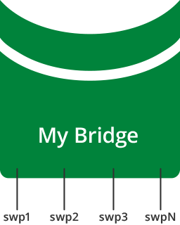

Ethernet Bridging - VLANs
Ethernet bridges provide a means for hosts to communicate through layer 2, by connecting all of the physical and logical interfaces in the system into a single layer 2 domain. The bridge is a logical interface with a MAC address and an MTU (maximum transmission unit). The bridge MTU is the minimum MTU among all its members. The bridge's MAC address is inherited from the first interface that is added to the bridge as a member. The bridge MAC address remains unchanged until the member interface is removed from the bridge, at which point the bridge will inherit from the next member interface, if any. The bridge can also be assigned an IP address, as discussed below.
Bridge members can be individual physical interfaces, bonds or logical interfaces that traverse an 802.1Q VLAN trunk.

Cumulus Networks recommends using VLAN-aware mode bridges, rather than traditional mode bridges. The bridge driver in Cumulus Linux is capable of VLAN filtering, which allows for configurations that are similar to incumbent network devices. While Cumulus Linux supports Ethernet bridges in traditional mode, Cumulus Networks recommends using VLAN-aware mode.
For a comparison of traditional and VLAN-aware modes, read this knowledge base article.
Cumulus Linux does not put all ports into a bridge by default.
You can configure both VLAN-aware and traditional mode bridges on the same network in Cumulus Linux; however you cannot have more than one VLAN-aware bridge on a given switch.
Contents
Creating a VLAN-aware Bridge
To learn about VLAN-aware bridges and how to configure them, read VLAN-aware Bridge Mode for Large-scale Layer 2 Environments.
Creating a Traditional Mode Bridge
To create a traditional mode bridge, see Traditional Mode Bridges.
Configuring Bridge MAC Addresses
The MAC address for a frame is learned when the frame enters the bridge via an interface. The MAC address is recorded in the bridge table, and the bridge forwards the frame to its intended destination by looking up the destination MAC address. The MAC entry is then maintained for a period of time defined by the bridge-ageing configuration option. If the frame is seen with the same source MAC address before the MAC entry age is exceeded, the MAC entry age is refreshed; if the MAC entry age is exceeded, the MAC address is deleted from the bridge table.
The following example output shows a MAC address table for the bridge:
cumulus@switch:~$ net show bridge macs VLAN Master Interface MAC TunnelDest State Flags LastSeen-------- -------- ----------- ----------------- ------------ --------- ------- -----------------untagged bridge swp1 44:38:39:00:00:03 00:00:15untagged bridge swp1 44:38:39:00:00:04 permanent 20 days, 01:14:03Configuring an SVI (Switch VLAN Interface)
Bridges can be included as part of a routing topology after being assigned an IP address. This enables hosts within the bridge to communicate with other hosts outside of the bridge, via a switch VLAN interface (SVI), which provides layer 3 routing. The IP address of the bridge is typically from the same subnet as the bridge's member hosts.
When an interface is added to a bridge, it ceases to function as a router interface, and the IP address on the interface, if any, becomes unreachable.
To configure the SVI, use NCLU:
cumulus@switch:~$ net add bridge bridge ports swp1-2cumulus@switch:~$ net add vlan 10 ip address 10.100.100.1/24cumulus@switch:~$ net pendingcumulus@switch:~$ net commitThese commands create the following SVI configuration in the /etc/network/interfaces file:
auto bridgeiface bridge bridge-ports swp1 swp2 bridge-vids 10 bridge-vlan-aware yesauto vlan10iface vlan10 address 10.100.100.1/24 vlan-id 10 vlan-raw-device bridgeAlternately, you can use the bridge.VLAN-ID naming convention for the SVI. The following example configuration can be manually created in the /etc/network/interfaces file, which functions identically to the above configuration:
auto bridgeiface bridge bridge-ports swp1 swp2 bridge-vids 10 bridge-vlan-aware yesauto bridge.10iface bridge.10 address 10.100.100.1/24Keeping the SVI in an UP State
When a switch is initially configured, all southbound bridge ports may be down, which means that, by default, the SVI is also down. However, you may want to force the SVI to always be up, to perform connectivity testing, for example. To do this, you essentially need to disable interface state tracking, leaving the SVI in the UP state always, even if all member ports are down. Other implementations describe this feature as "no autostate".
In Cumulus Linux, you can keep the SVI perpetually UP by creating a dummy interface, and making the dummy interface a member of the bridge. Consider the following configuration, without a dummy interface in the bridge:
cumulus@switch:~$ cat /etc/network/interfaces... auto bridgeiface bridge bridge-vlan-aware yes bridge-ports swp3 bridge-vids 100 bridge-pvid 1 ...With this configuration, when swp3 is down, the SVI is also down:
cumulus@switch:~$ ip link show swp35: swp3: <BROADCAST,MULTICAST> mtu 1500 qdisc pfifo_fast master bridge state DOWN mode DEFAULT group default qlen 1000 link/ether 2c:60:0c:66:b1:7f brd ff:ff:ff:ff:ff:ffcumulus@switch:~$ ip link show bridge35: bridge: <NO-CARRIER,BROADCAST,MULTICAST,UP> mtu 1500 qdisc noqueue state DOWN mode DEFAULT group default link/ether 2c:60:0c:66:b1:7f brd ff:ff:ff:ff:ff:ffNow add the dummy interface to your network configuration:
-
Create a dummy interface, and add it to the bridge configuration. You do this by editing the /etc/network/interfaces file and adding the dummy interface stanza before the bridge stanza:
cumulus@switch:~$ sudo nano /etc/network/interfaces...auto dummyiface dummylink-type dummyauto bridgeiface bridge... -
Continue editing the interfaces file. Add the dummy interface to the bridge-ports line in the bridge configuration:
auto bridgeiface bridgebridge-vlan-aware yesbridge-ports swp3 dummybridge-vids 100bridge-pvid 1 -
Save and exit the file, then reload the configuration:
cumulus@switch:~$ sudo ifreload -a
Now, even when swp3 is down, both the dummy interface and the bridge remain up:
cumulus@switch:~$ ip link show swp35: swp3: <BROADCAST,MULTICAST> mtu 1500 qdisc pfifo_fast master bridge state DOWN mode DEFAULT group default qlen 1000 link/ether 2c:60:0c:66:b1:7f brd ff:ff:ff:ff:ff:ffcumulus@switch:~$ ip link show dummy37: dummy: <BROADCAST,NOARP,UP,LOWER_UP> mtu 1500 qdisc noqueue master bridge state UNKNOWN mode DEFAULT group default link/ether 66:dc:92:d4:f3:68 brd ff:ff:ff:ff:ff:ffcumulus@switch:~$ ip link show bridge35: bridge: <BROADCAST,MULTICAST,UP,LOWER_UP> mtu 1500 qdisc noqueue state UP mode DEFAULT group default link/ether 2c:60:0c:66:b1:7f brd ff:ff:ff:ff:ff:ffCaveats and Errata
-
A bridge cannot contain multiple subinterfaces of the same port. Attempting this configuration results in an error.
-
In environments where both VLAN-aware and traditional bridges are in use, if a traditional bridge has a subinterface of a bond that is a normal interface in a VLAN-aware bridge, the bridge will be flapped when the traditional bridge's bond subinterface is brought down.